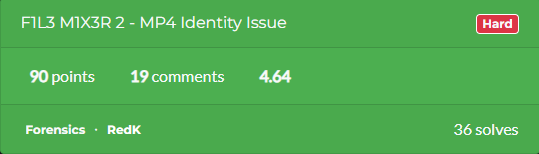

December 22, 2025 - Forensics Challenge
During my exploration of CTF challenges, I encountered a curious MP4 file that didn’t behave as expected. this challenge involved investigating an MP4 video that seemed to have identity problems in its structure.
I started by checking the file metadata and type to understand what I am dealing with:
$ ls -la flag.mp4 -rw-rw-r-- 1 me me 408083 Dec 22 07:33 flag.mp4 $ file flag.mp4 flag.mp4: Apple QuickTime movie (fast start)
After that, I attempted to look for any hidden strings inside the file:
$ strings flag.mp4 ... DELETETHIS MESSAGE, IT IS NOT A PART OF THE PROBLEM ...
A message appeared in the strings at the end, but it wasn’t useful...
I tried decoding the file with ffmpeg to see how the media streams are recognized:
$ ffmpeg -hide_banner -i flag.mp4 Input #0, mov,mp4,m4a,3gp,3g2,mj2, from 'flag.mp4': Stream #0:0: Audio: aac (LC), 44100 Hz, mono $ mpv flag.mp4 [ffmpeg/audio] aac: channel element 0.4 is not allocated [ffmpeg/audio] aac: Reserved bit set
These errors indicated there is something wrong with the audio atom structure.
MP4 is a binary container format based on the ISO Base Media File Format (ISO/IEC 14496‑12). I reviewed how atoms (boxes) are organized:
[ 4 bytes ] Atom size (big-endian) [ 4 bytes ] Atom type (ASCII) [ N bytes ] Atom data (payload or nested atoms)
Then, I checked a real hex dump from the beginning of a valid MP4 file for reference:
00000000 00 00 00 18 66 74 79 70 69 73 6F 6D 00 00 02 00 00000010 69 73 6F 6D 69 73 6F 32
This helped me understand how atoms like ftyp,
moov, and mdat work together.
00 00 00 18 -> Atom size = 24 bytes 66 74 79 70 -> "ftyp" 69 73 6F 6D -> Major brand (isom) 00 00 02 00 -> Minor version 69 73 6F 6D -> Compatible brand 69 73 6F 32 -> Compatible brand
With this, I confirmed the file is recognized as an MP4 container, but the internal offsets might be broken.
The ftyp atom identifies the file as a valid MP4
container and must appear near the start of the file for correct
identification.
The two most critical atoms are moov and
mdat:
A simplified logical layout:
[ moov ]
└─ trak
└─ mdia
└─ minf
└─ stbl
├─ stco / co64 (chunk offsets)
├─ stsz (sample sizes)
└─ stts (timing)
[ mdat ]
└─ raw AAC / H.264 data
Errors during playback usually happen if the offsets in
stco or co64 point to wrong locations.
Timing and synchronization are handled via time scales rather than assumptions:
Audio timescale: 44100 Video timescale: 90000 Video FPS: 24000/1001 (~23.976)
Next, I confirmed timestamps are consistent to ensure synchronized playback.
MP4 also supports Fast Start, where the
moov atom is placed before mdat:
[ ftyp ][ moov ][ mdat ] -> Fast Start [ ftyp ][ mdat ][ moov ] -> Requires full download
I used this knowledge to identify why the file was failing.
Official specifications defining this structure:
At this point, I had already tried several methods to identify the
problem. I checked the streaming information and tried common repair
techniques, but none of them explained why the file was corrupted.
Since the automated tools hadn't revealed the root cause, I decided to
examine the file manually. I opened the MP4 file in a
ghex and began analyzing its structure byte byte to
understand where the error lay.
Initially theflag.mp4file is as follows:
00000000: 5245 444b 6d6f 6f76 0000 006c 6d76 6864 REDKmoov...lmvhd 00000010: 0000 0000 da29 4a68 da29 4a68 0000 ac44 .....)Jh.)Jh...D 00000020: 0015 d3fc 0001 0000 0100 0000 0000 0000 ................ 00000030: 0000 0000 0001 0000 0000 0000 0000 0000 ................ 00000040: 0000 0000 0001 0000 0000 0000 0000 0000 ................ ...
Compared to a normal reference MP4, the layout of this file
immediately stood out. The moov atom appears right at the
start and its internal structure is clearly visible, but the very
first four bytes being REDK was unexpected. In a
standard MP4 file, this value should represent the size of the
moov atom, yet using it here makes no sense since the
entire file is only a few hundred kilobytes in size.
This layout matches what is commonly known as a
fast start MP4. By placing the moov atom at the
beginning of the file, media players can initialize playback
immediately without waiting for the full download to complete. This
behavior aligns with what the file utility reported
earlier and explains why the container structure looks front-loaded.
What makes the file even more unusual is the absence of the
ftyp atom at the start. Instead of appearing where it
normally would, it shows up much later in the binary. While some
players may still tolerate this, it breaks conventional MP4 ordering
rules and strongly suggests that the file was intentionally modified
rather than accidentally corrupted.
... 000018f0: 006d 7034 3169 736f 6d00 0000 2875 7569 .mp41isom...(uui 00001900: 645c a708 fb32 8e42 05a8 6165 0eca 0a95 d\...2.B..ae.... 00001910: 9600 0000 0c31 302e 302e 3138 3336 332e .....10.0.18363. 00001920: 3052 4544 4b6d 6461 7400 0000 0000 0000 0REDKmdat....... 00001930: 1007 1e18 ac24 260a 0484 8220 b110 4c14 .....$&.... ..L. ...
While inspecting the later parts of the file, I noticed several extra
atoms such as uuid and Xtra. I didn’t spend
much time on them, as they didn’t appear to affect playback or
decoding.
Since mdat is the final atom in this file, its size can
be determined directly from the file layout. After accounting for the
actual end of the media data, the correct size of the
mdat
atom was identified as:
mdat size: 0x62079
To determine the correct mdat size, I followed a simple
calculation: since mdat is the last atom, its size
extends from its starting offset to the end of the file. The starting
offset of mdat was 0x1921 and the total file
size was 407,962 bytes. Subtracting these gives the actual size of the
mdat atom:
mdat size = total file size - mdat offset
= 407,962 - 0x1921
= 401,529 bytes
= 0x62079
This confirmed that the previously stored placeholder value was
incorrect, and replacing it with
0x62079 corrected the atom size.
This value replaces the invalid placeholder currently stored in the file:
00001920: 3052 4544 4b6d 6461 7400 0000 0000 0000 0REDKmdat.......
after edit:
00001920: 3000 0620 796d 6461 7400 0000 0000 0000 0.. ymdat.......
For the moov atom, the correct size was determined by
locating the first atom that does not belong to its hierarchy. In this
case, the boundary was clearly marked by the ftyp atom,
resulting in the following corrected value:
moov size: 0x18e1
00000000: 5245 444b 6d6f 6f76 0000 006c 6d76 6864 REDKmoov...lmvhd
after edit :
00000000: 0000 18e1 6d6f 6f76 0000 006c 6d76 6864 ....moov...lmvhd
After correcting the invalid atom sizes, the file structure was internally consistent, yet audio decoding was still failing. This pointed to an addressing issue rather than a codec problem, specifically in how the media data was being referenced.
The problem was located in the stco atom, which stores
absolute chunk offsets into the mdat atom. In
flag.mp4, this offset was set to 0x50, a
position that does not reference media data at all but instead points
into the moov atom.
A direct inspection confirmed that the actual
mdat payload begins much later in the file, with the AAC
stream starting at offset 0x1931. Updating the chunk
table to reflect this location allows the decoder to correctly locate
audio samples.
00001830: 0100 0000 5000 0000 ac75 6474 6100 0000
after edit:
00001830: 0100 0019 3100 0000 ac75 6474 6100 0000
Once the chunk offset was corrected, the media player was able to parse valid AAC frames, and the audio track played successfully.
On December 22, 2025, I proudly solved this 5-year-old CTF challenge. Only 36 people worldwide have managed to complete it, and being one of them fills me with immense pride! It was a tough and rewarding journey, and finally seeing everything work perfectly is an incredible feeling.

Written and curated by 0xHM